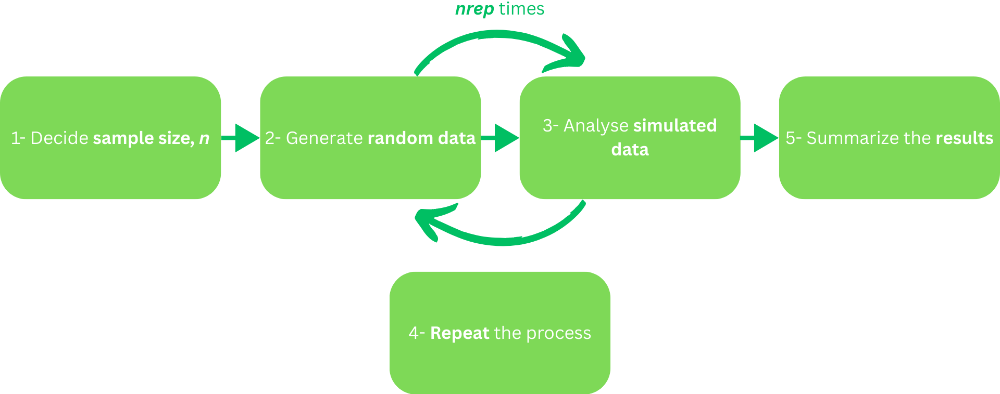
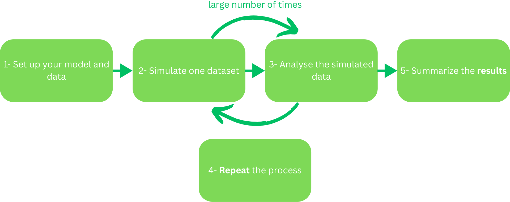

Running simulations and power analysis in R
04/03/2026
Licence

This work was originally created by Malika Ihle based on materials from Joel Pick, Hadley Wickham, and Kevin Hallgren, with contributions from James Smith. This current work by Tejaswini Sharma, Sarah von Grebmer zu Wolfsthurn and Malika Ihle is licensed under a CC-BY-SA 4.0 Creative Commons Attribution 4.0 International SA License. It permits unrestricted re-use, distribution, and reproduction in any medium, provided the original work is properly cited. If you remix, transform, or build upon the material, you must distribute your contributions under the same license as the original.
Contribution statement
Creator: Sharma, Tejaswini ( 0009-0000-0305-9751)
0009-0000-0305-9751)
Reviewer: Von Grebmer zu Wolfsthurn, Sarah ( 0000-0002-6413-3895)
0000-0002-6413-3895)
Consultant: Ihle, Malika ( 0000-0002-3242-5981)
0000-0002-3242-5981)
Prerequisites
Important
Before completing this submodule, please carefully read about the prerequisites.
| Prerequisite | Description | Link/Where to find it |
|---|---|---|
| R and RStudio installed | Latest R version: ‘4.4.0+’ and RStudio version: ‘2026.01.0+392’ | Installation Link |
| R basics | e.g., how to select a value in a data frame, how to create a vector | Tutorial Link |
| Familiarity with basic statistical concepts | e.g., hypothesis testing, descriptive statistics, data analysis | Cheatsheet Link |
Before we start: Survey time!
Let us find out where are you at!
How confident are you in defining what a “simulation” is in the context of scientific research?
Not confident.
Somewhat confident.
Confident.
Very confident
Simulations are often used in research to… (Select all you think apply)
Generate artificial data
Visualize complex statistical concepts
Replace all statistical analyses
Test how models perform under different scenarios
No clue
How familiar are you with the concept of “power” in statistics?
I have never heard of it
I heard the term before, but do not know what it means
I understand the basics of “power”
I am comfortable with calculating power
Power analysis is important for research because… (Select all you think apply)
It helps determine how many samples you need
It ensures studies always find significant results
It helps you design more reliable studies
It explains all statistical results
No clue
How comfortable are you with performing simulations in R?
Very uncomfortable
Somewhat uncomfortable
Neutral
Somewhat comfortable
Very comfortable
Discussion of survey results
What do we see in the results?
Learning goals
- To understand the concept of simulations
- To explain the purpose of simulations in research
- To summarize how simulations support hypothesis testing and experimentation
- To perform the simulation process in the context of a fictional experiment
- To understand the concept of power analysis
- To explain the purpose of power analysis in research
- To summarize how power analysis supports hypothesis testing and experimentation
- To successfully perform a simulation in R
Key terms and definitions
- Simulations: Simulations are computer experiments that generate artificial data by pseudo-random sampling, allowing researchers to evaluate statistical methods under controlled, known conditions (Morris et al., 2019).
- Power analysis: Power analysis is a statistical method used to determine the probability that a study will detect a true effect (if it exists) or, equivalently, the probability of correctly rejecting a false null hypothesis (Steidl et al., 1997).
- Effect size: Effect size quantifies the magnitude and direction of a difference or relationship between groups or variables (Lorah, 2018).
What are simulations?
Let’s flip a coin
Imagine you want to flip a coin 100 times, and see the results.
Actually flipping the coin-> Pretend to flip in mind…And write down the results each time.
This pretending is called a simulation.
What are simulations?
- In a simulation, you make up data that acts like what you expect in the real world.
- You do this again and again and see what results you get.
What are simulations?
- In a simulation, you make up data that acts like what you expect in the real world.
- You do this again and again and see what results you get.
Your turn!
Get in a pair, first imagine flipping a coin 100 times and note how many heads and tails you expect. Then, discuss why doing this pretend experiment first is useful for planning a real study.
Why are simulations used in research?
What ideas have you come up with during the previous activity?
Why are simulations used in research?
To build “good feeling” about data (intuition)
To understand chances (probability)
To check if an experiment is strong enough (power)
To practice before the real experiment (planning)
To contribute to open research (transparency)
Basic simulation process

Your turn!
Time to apply the simulation process to your coin-flip experiment. Get in your pair, and discuss each step according to your experiment.
For example, if you flip a coin a 10 times (n = 10), your data could be H, T, H, H, T, T, H, T, H, H (random data).
Learning goals: Check-in
- To understand the concept of simulations ✅
- To explain the purpose of simulations in research ✅
- To summarize how simulations support hypothesis testing and experimentation ✅
- To perform the simulation process in the context of a fictional experiment ✅
What is power analysis?
Let’s flip the coin again, but how many times?
Power analysis is like figuring out how many times you need to flip a coin -> to be pretty sure you can tell if the coin is fair or not.
Power = your chance of catching the coin’s true nature if it really is biased.
If power = 80% -> you have an 80% chance of spotting a bias if it’s really there.
What is power analysis?
Power depends on:
The effect size (= how biased the coin might be)
The sample size (= how many times you flip the coin)
The significance level (= how sure you want to be)
Your turn!
Get together in your pair, and discuss why conducting power analysis for your experiment could be useful.
Why is power analysis used in research?
What ideas have you come up with during the previous activity?
Why is power analysis used in research?
Prevents underpowered studies: By helping you determine the minimum sample size, it makes sure you do not do an experiment that is too weak to detect an effect that is there.
Minimizes wasting resources: Helps you figure out the most efficient experimental design, which in terms minimizes wasting time, money or human resources.
Required for transparency and publication: Represents evidence that your experimental plan is thought through, e.g., the sample size, and others can replicate your methods (i.e., in e spirit of Open Research)
Performing a power analysis
Two ways:
Power analysis through a formula = method that uses a mathematical formula to estimate your sample size or effect size (see G*Power). For example, the formula could be used to quickly estimate your required sample size for your experiment. Works best for simple study designs (e.g., one-sample t-test, simple linear regression).
Power analysis through simulations = pretending to do the experiment many times on a computer before actually doing it. You input what you expect to happen (e.g., study design, means, etc.). The experiment “runs” using these parameters and you see how often the simulated experiment correctly detects an effect. Works well for complex study designs (e.g., longitudinal data) and unusual data. (This is today’s focus).
Basic simulation process

In-class Activity
Time to apply the power analysis process to your coin-flip experiment. Get in your pair, and discuss when and how you would integrate a power analysis.
Your turn!
In this next part, you will familiarize yourself with simulations through hands-on exercices and activities:
Introduction to Simulations in R: Hands-on practical activities
Or follow: https://lmu-osc.github.io/Introduction-Simulations-in-R/
Tip
Since this is a self-paced tutorial, take your time on navigating it; and it can be finished at home as well. We will have a check-in moment at the end of this session.
Assignment
If you have not completed the tutorial yet:
Complete the rest in your own time.
Learning goals: Check-in
- To understand the concept of simulations ✅
- To explain the purpose of simulations in research ✅
- To summarize how simulations support hypothesis testing and experimentation ✅
- To perform the simulation process in the context of a fictional experiment ✅
- To understand the concept of power analysis ✅
- To explain the purpose of power analysis in research ✅
- To summarize how power analysis supports hypothesis testing and experimentation ✅
- To successfully perform a simulation in R ✅
Relevance to you?
Can you imagine using simulations for your work/projects/studies?
Take-home messages
Simulations = safe playground: You try your study many times with pretend data, so you learn how your experiment might behave before touching real data.
Power analysis = trial period: You find the “just right” study size, not too small to miss real effects, not too big to waste resources.
Together they’re your research rehearsal: first you imagine the experiment (simulate), then you check if the plan is strong enough (power), and only then you go on stage with real data.
To conclude: Survey time!
How confident are you in defining what a “simulation” is in the context of scientific research?
Not confident.
Somewhat confident.
Confident.
Very confident
Simulations are often used in research to… (Select all you think apply)
Generate artificial data
Visualize complex statistical concepts
Replace all statistical analysis
Test how models perform under different scenarios
How familiar are you with the concept of “power” in statistics?
I’ve never heard of it
I know the term
I understand the basics
I’m comfortable with calculating power
Power analysis is important for research because… (Select all you think apply)
It helps determine how many samples you need
It ensures studies always find significant results
It helps you design more reliable studies
It explains all statistical results
No clue
How comfortable are you with running basic R code and performing simulations in R?
Very uncomfortable
Somewhat uncomfortable
Neutral
Somewhat comfortable
Very comfortable
Discussion of survey results
What do we see in the results?
References
Additional Resources:
- Hallgren, K. A. (2013). Conducting Simulation Studies in the R Programming Environment. Tutorials in Quantitative Methods for Psychology, 9(2), 43–60. https://doi.org/10.20982/tqmp.09.2.p043
- Mullendore, G. L., Mayernik, M. S., & Schuster, D. C. (2021). Open Science Expectations for Simulation-Based Research. Frontiers in Climate, 3. https://doi.org/10.3389/fclim.2021.763420
- Wassertheil, S., & Cohen, J. (1970). Statistical Power Analysis for the Behavioral Sciences. Biometrics, 26(3), 588. https://doi.org/10.2307/2529115
- Introduction to Power Analysis by Courtney K. Soderberg
Thanks!
See you next class :)
Contribution Statement - UNINISHED
LMU Open Science Center